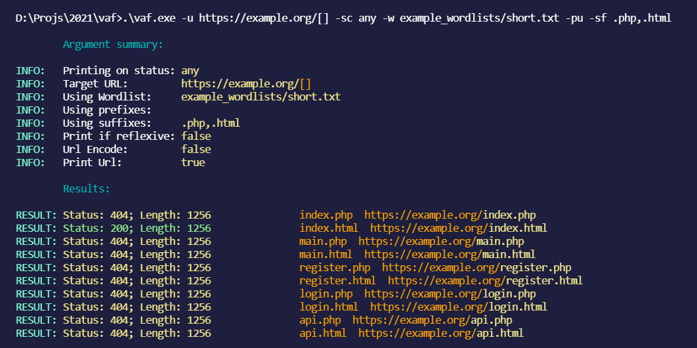
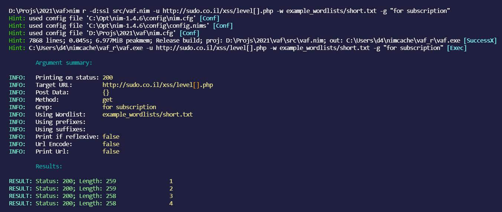

vaf
very advanced fuzzer
GitHub Repo: https://github.com/d4rckh/
features - Grep - Status code filtering - Detect reflexivness (useful for finding xss) - Prefix, suffixes - Custom wordlists - Fuzz any part of the url - POST support - URL encode payload - Print requested URL (useful for debugging) - Much more to come
screenshots



